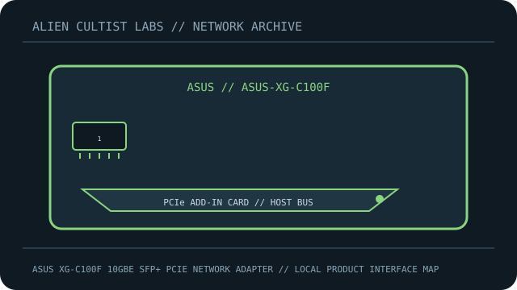

[ MODEL-SPECIFIC NETWORK HARDWARE ]
ASUS XG-C100F 10GbE SFP+ PCIe Network Adapter
Single-port 10GbE SFP+ PCIe adapter for compatible optical modules or direct-attach cables. This record is limited to the exact named model; revisions and regional SKUs may differ.

MODEL IDENTIFICATION: Match the complete model number and revision on the manufacturer label before applying specifications. Published link rates are nominal, not measured application throughput.
Published specifications and compatibility
| Exact product | ASUS XG-C100F 10GbE SFP+ PCIe Network Adapter |
|---|---|
| Archive subcategory | 10 Gigabit and server adapters |
| Physical ports | 1 × SFP+ cage supporting 10GbE and compatible 1GbE media per manufacturer specification. |
| Host / chassis interface | PCI Express 2.0 ×4 host interface; SFP+ transceiver or DAC is a separate compatibility choice. |
| Standards / protocol | 10GBASE-SR/LR optics, supported 1GbE SFP or SFP+ DAC depending on module and driver compatibility. |
| Rated link and switching rates | Up to 10Gb/s nominal link rate. Optical/DAC link compatibility and achievable transfer speed depend on peer, module, fiber and host. |
| Power and thermal notes | PCIe bus-powered adapter with passive thermal heatsink; provide chassis airflow and keep the card within vendor thermal guidance. |
| Firmware / driver | Install ASUS-supported XG-C100F driver for the target OS and check updates/support notes; module support can depend on driver and firmware. |
| Compatibility guidance | Verify PCIe ×4 electrical slot, OS-specific ASUS driver, supported SFP+/SFP module, wavelength/fiber type and far-end transceiver. Do not insert copper RJ-45 modules without confirming temperature and adapter support. |
Model-specific deployment notes
The XG-C100F provides an SFP+ interface, unlike ASUS XG-C100C which uses 10GBASE-T RJ-45. Optics and fiber are not included as implied by the card model.
For a reproducible speed or interoperability test, record both link-partner models, cable/media, firmware, negotiated rate and test method. No benchmark is claimed in this archival record.
Manufacturer sources and documentation
- ASUS — official ASUS XG-C100F 10GbE SFP+ PCIe Network Adapter product specificationsManufacturer product page/specification reference for this model.
- ASUS — official support, manual or compatibility resourcesUse revision- and region-specific documentation for firmware, installation, media and compatibility decisions.
Source specifications describe rated capability; verify the label and current manufacturer documentation before purchase or deployment.